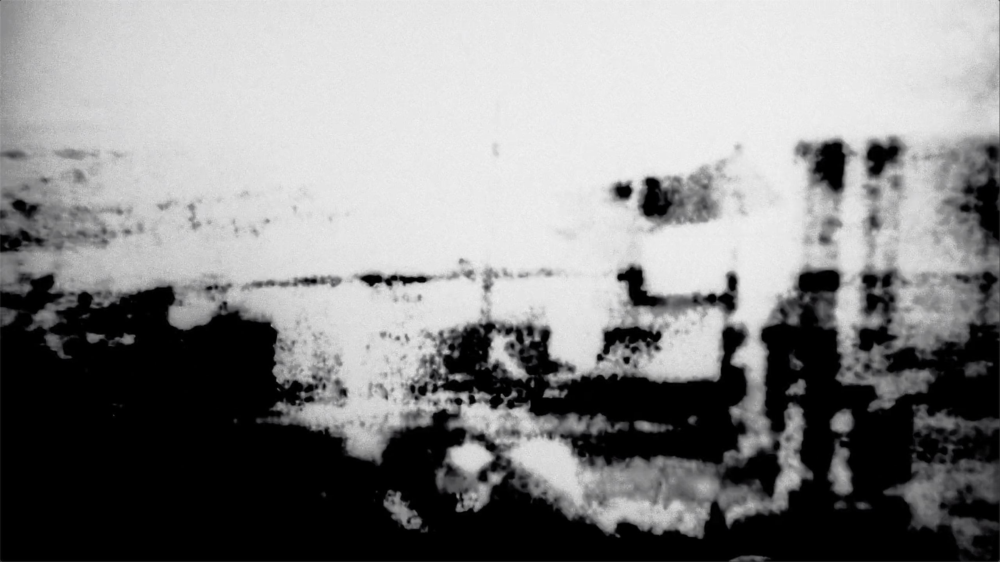
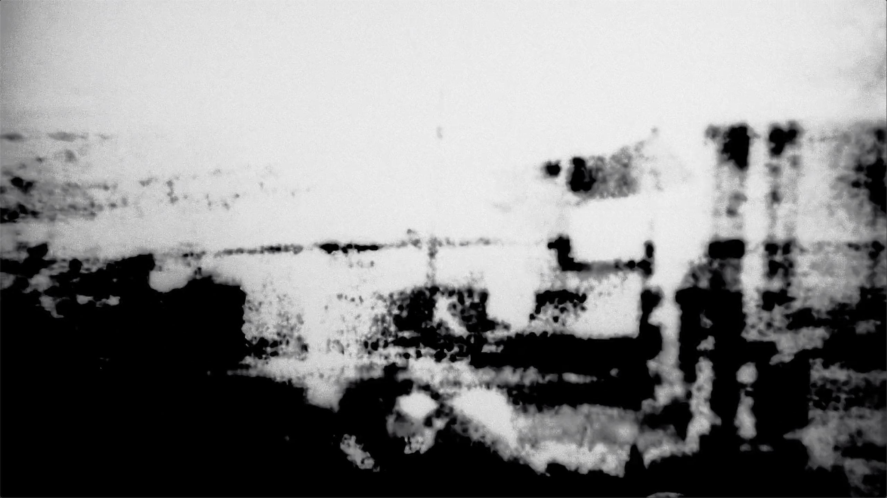
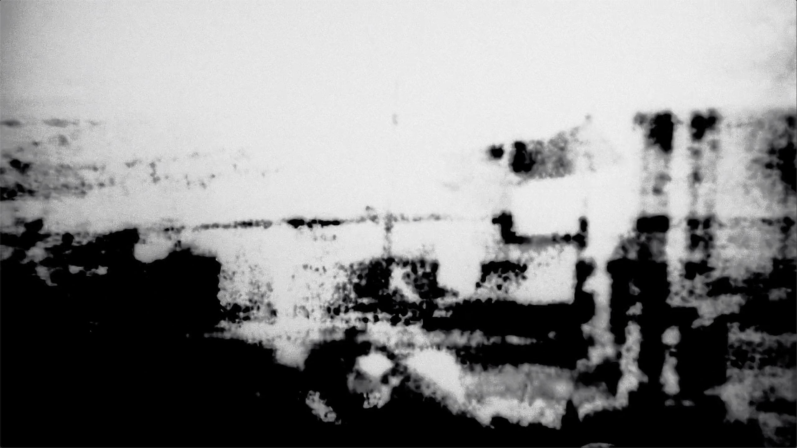
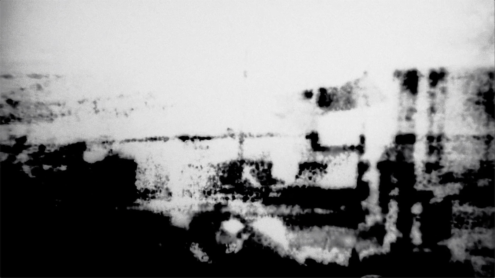

 

world – camera – film – computer – screen – camera – film – screen – world
This video projection is about the unattainable. The haunting longing between the present and the unobtainable memory is a romantic dream to fight for freedom. It is an audiovisual expression as a response to both history and future events. The translations of visual material—from world to film to the digital screen and back to the world—are failed attempts to obtain. Fear. It is about not re-enforcing the suffering images and lives. Abstraction. It is a result of the power today—we are not allowed to directly talk about realities, truths and memories. It is also an individual murmuring to the collective memory. The inability to stay; the fantasy to be exiled.
The images here in the “documentation” were images projected live from a 16mm projector, captured again on HD video. First shot on Bolex with 16mm film negative, I digitized the images to digital video. After the transfer, some glitches and unstable pixels appear on the digital file of the celluloid material. I re-composed the images with “optical flow” and captured the images again with “super 16mm” Bolex as they bleed through on a computer screen. Therefore, the sound, besides the sound of the projector itself, is the optical sound of the images. I connect to play with the transfers between the film and the digital with the failed attempt to obtain from both the past and the future. The pairing images and sounds came back to us in a loop just as they usually live in our mind and consciousness.
Screened at: CROSSROADS 2020 Film Festival, San Francisco Cinematheque, online, US
CROSSROADS 2020 – program 5 the rocks crumble